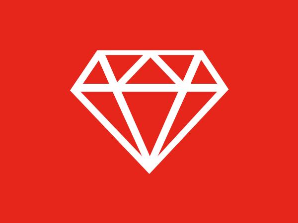
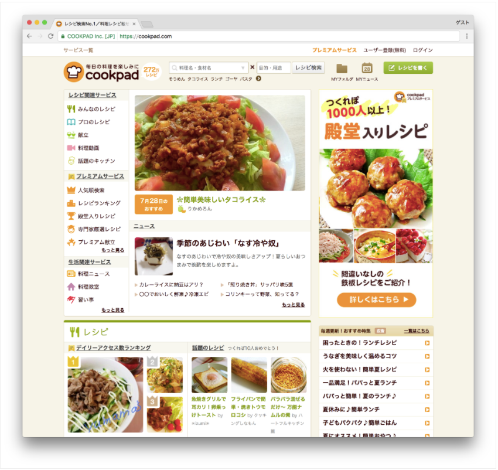

HOME
Rubyとは？
Rubyは、「楽しさ」と「実用性」に重点を置いたプログラミング言語です。

現在一般的に普及している言語の多くは、海外で開発されたものが多いのですが、
Rubyは日本人が開発した国産のプログラミング言語です。
他の言語と比較しても、ソースコードを短く直感的に書くことができるため、
初心者が学習しやすく、プログラミング言語の中でも人気が高まっています。
Rubyの特徴
RubyはWebアプリケーション開発の現場でよく使われています。
Ruby on Railsというフレームワークを使うことによって、
他の言語よりも効率良く、Webアプリケーションを制作することができます。
cookPad
cookpadでは料理レシピを見るだけでなく、投稿や検索ができたり、
ユーザ登録することで自分用のレシピ集を作れたりなど、様々な機能があります。

Amazon
Amazonでは様々な商品を検索、閲覧することができ、それを購入する機能があります。
上記の他にも、Twitter、Hulu、楽天市場、食べログなど、
身近なサービスの中でRubyの技術は使われています。